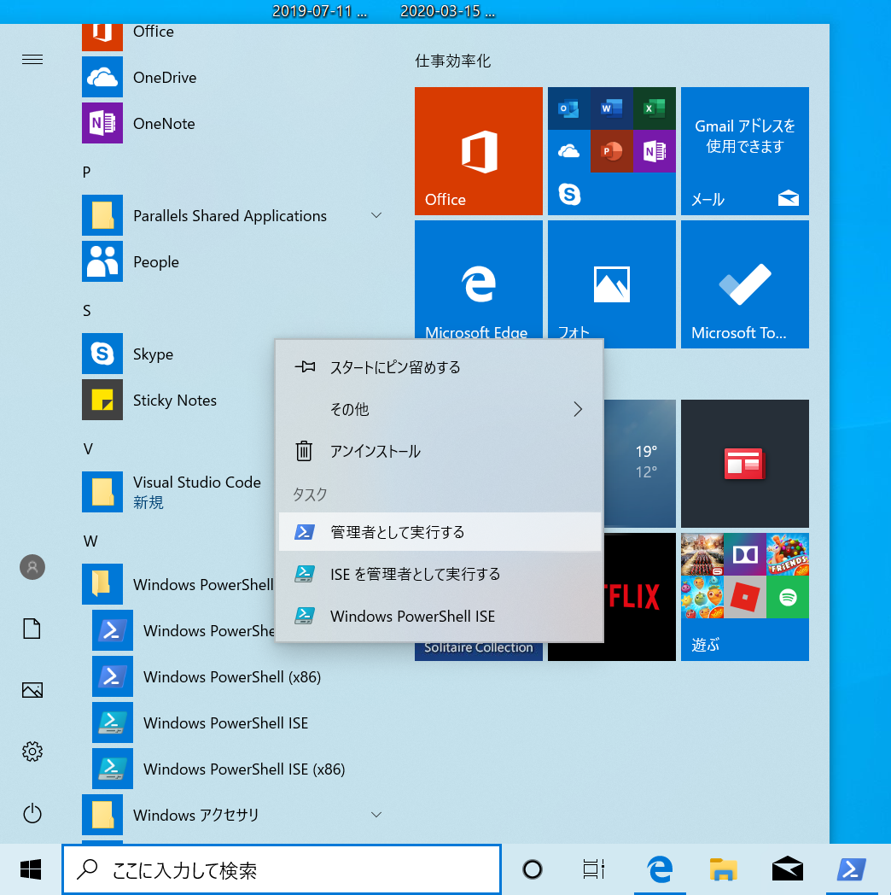

1. はじめに
下川研では研究活動を行う際に、様々なソフトウェアを利用する。 代表的なものとして以下のようなものがある。
- Git : ソフトウェアのバージョン管理
- GitHub Desktop : Git 用 GUI
- Visual Studio Code : 汎用エディタ
- Docker Desktop : コンテナ実行環境
2. インストールするもの
ここでは、以下のソフトウェアのインストール方法を説明する。 また、Windows と Mac 用のインストール方法を説明する。 自分が使っている PC の環境に合わせて作業をすること。
- パッケージ管理ソフト
- Chocolatey (Windows の場合)
- Homebrew (Mac の場合)
- Git
- GitHub Desktop
- これに先立って GitHub のアカウント作成についても説明する
- Visual Studio Code
- Docker Desktop
3. パッケージ管理ソフト
各種ソフトウェアを管理するのに、パッケージ管理ソフトと呼ばれるソフトウェアを利用する。 これにより様々なソフトウェアの管理を一元化する。 パッケージ管理ソフトは、パッケージマネージャと呼ばれることもある。
Windows では Chcolatey , Mac では Homebrew というパッケージ管理ソフトを利用する。
パッケージ管理ソフトを使ってコマンドラインでインストール作業を行う。 最初のうちは、コマンド入力が大変に感じるかもしれない。 しかし、慣れてくると分かるが GUI で操作するよりも、 コマンドラインで操作するほうが再現性が高く、間違いが少ない。
3.1 Windows : Chocolatey
PowerShellを管理者権限で実行する- Windows メニューから Windows Power Shell のメニューを開く
- Windows Power Shell という項目の上で右クリックし、管理者として実行するをクリック

- Chcolatey本家のインストール情報ページの、以下の右端の青い○で囲まれた部分をクリックし、インストール用コマンドラインをコピーする

- PowerShell ウィンドウ上に貼り付ける
- ウィンドウ上で
Ctrl-v Enterを入力 - これで Chcolatey のインストールが完了
- ウィンドウ上で
3.2 Mac : Homebrew
ターミナルを実行する- ドック から
Launchpadを実行 - その他 の中の
ターミナルを実行 - HomeBrew本家 の以下の右端の赤い◯で囲まれた部分をクリックし、インストール用コマンドラインをコピーする

- ターミナル上に貼り付ける
- ウィンドウ上で
Command-v Enterを入力 - この後 Password: と表示されたら、mac のログインパスワードを入力
- Press Return/Enter to continue or any other key to abord: と表示されたら
Enterキーを叩く
- ウィンドウ上で
- Homebrew のインストールが終了するので、以下を実行し、Homebrew を有効化する
echo >> ~/.zprofile echo 'eval "$(/opt/homebrew/bin/brew shellenv)"' >> ~/.zprofile eval "$(/opt/homebrew/bin/brew shellenv)"
4. Git
4.1 Windows
- 管理者権限で起動した PowerShell 上で
choco install -y gitを実行し、git をインストールする
4.2 Mac
- Mac は標準でも Git がインストールされているが、バージョンが古い。 そこで Homebrew を使い最新版の Git をインストールする。
- ターミナル上で
brew install gitを実行する
5. GitHub
Git では中央リポジトを利用する。 下川研では中央リポジトリとして GitHub.com のサービスを利用する。 そこで このドキュメントに従って GitHub のアカウントを登録する
下川研では、GitHub に smkwlab organizationを作成し、 共同作業に利用している。 この登録作業は下川にしか出来ないので、登録した GitHub アカウントを、下川まで連絡する。
6. GitHub Desktop
Git や GitHub を操作するための GUI として GitHub Desktop を使う。 本来はコマンドラインの使い方を覚えてほしいが、まずは使えるようになることが先決。
6.1 Windows の場合
- 管理者権限の PowerShell 上で
choco install -y github-desktopを実行
6.2 Mac の場合
- ターミナル上で
brew install --cask githubを実行
7. Visual Studio Code
Visual Studio Code(以下 VScode) は汎用エディタである。 下川研では Markdown ファイルの編集演習を行う。 この際に VScode の preview モードが便利なので、これを利用する。 なお、TeraPad や Eclipse の代わりにも使えるので、興味がある人は使ってみるとよい。 さらに GitHub Desktop を使う必要をなくすこともできる。
7.1 Windowsの場合
- 管理者権限の PowerShell 上で
choco install -y vscodeを実行
7.2 Mac の場合
- ターミナル上で
brew install --cask visual-studio-codeを実行
7.3 日本語化
VScode インストール後、この記事を参考に表示言語を日本語にしておくと便利かもしれない。 英語表示のまま使っても何も問題はない
8. Docker Desktop
Docker Desktop はコンテナ実行環境である。
8.1 Windows の場合
- 管理者権限の PowerShell 上で
choco install -y docker-desktopを実行
8.2 Mac の場合
- ターミナル上で
brew install --cask dockerを実行